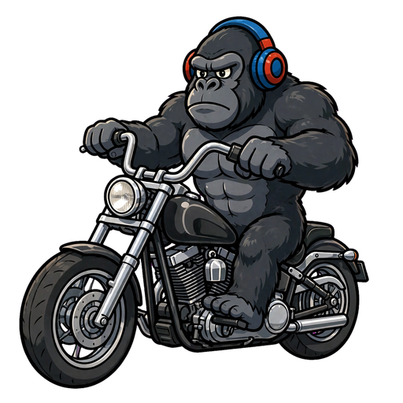
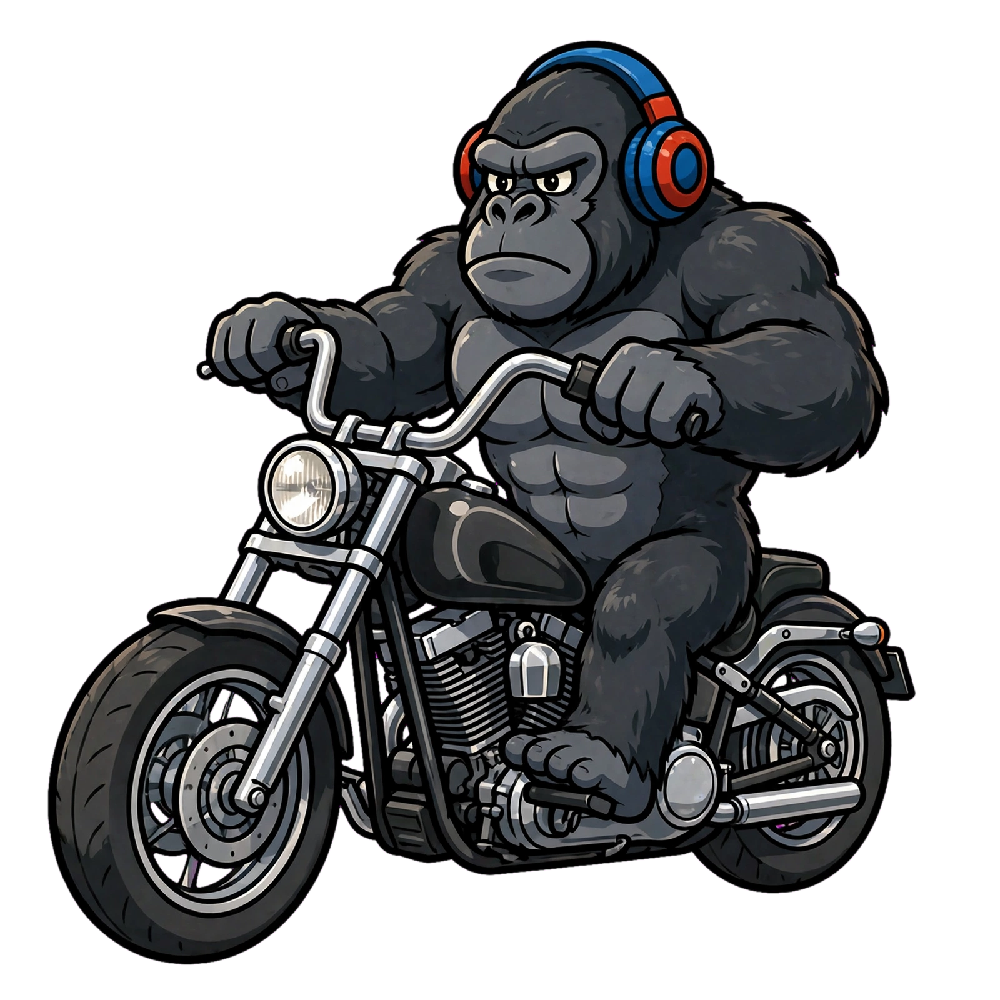

Mono BridgeMono Bridge convierte tu teléfono en un intercomunicador de moto. Conecta a toda tu manada por red local — sin importar la marca de casco o de teléfono. ¡Y cada moto repite la señal para que nadie se quede sin banana! 🍌

A diferencia de los intercomunicadores normales, en Mono Bridge cada moto repite la voz a las demás. El alcance se encadena de mono en mono: aunque el primero y el último estén lejos, la señal salta por los del medio. 🌴
Comunicación de voz en tiempo real entre teléfonos por red local (WiFi o hotspot).
Varios motociclistas conectados a la vez. Cada uno se identifica con su nombre.
Cada moto retransmite la señal a las demás, encadenando el alcance. El grupo se mantiene comunicado aunque se separen, sin depender de una sola conexión.
Habla solo con tu copiloto o pareja sin salir del grupo. Susurro privado 1 a 1.
Botón de alarma que avisa por voz a todo el grupo, aunque estén con música.
Funciona con AirPods, audífonos Bluetooth e intercomunicadores. Detecta la mejor calidad.
Multiplataforma: los teléfonos se comunican entre sí sin importar el sistema.
Cada mono instala Mono Bridge y usa su casco o audífono habitual.
Todos se ponen en la misma red WiFi o en el hotspot de uno.
La app los conecta y ¡a parlotear en marcha! 🗣️
🐵 Consejo mono: usa audífonos con micrófono para mejor calidad y evitar eco. Usa la app con cabeza; no manipules el teléfono mientras conduces.
Mono Bridge — intercom de moto simple y salvaje, para iPhone y Android.
Próximamente en Google Play 🍌